Södermalm i tid och rum. Stockholm
Sågargatan
|
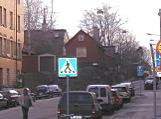  2004. Åsögatan österut. Sågargatan börjar till vänster. 2004. Åsögatan österut. Sågargatan börjar till vänster.
|
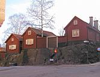 
|
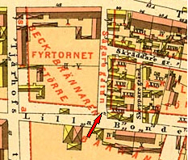
Sågargatan 5-11, Åsögatan 139. Närmast Sågargatan 11. Huset i bakgrunden är Folkungagatan 83 (117). Därovanför Magdalenahemmet, ålderdomshem och del av Ersta diakonissanstalt.
Ur Stockholms gatunamn
År 1781 omnämns gatan, som då gick mellan nuvarande Åsögatan och Folkungagatan, såsom en »Gränd - Sågare Backen kallad». Den kallas 1806 Sågare Gränden, ett namn som den behåller till namnrevisionen 1885, då man ger namnet Sågaregatan åt »den vidgade Sågaregränden». Någon absolut visshet om anledningen till namnet torde ej kunna nås, men det är tänkbart att här har bott sågare som arbetat vid det närbelägna varvet vid Tegelviken.
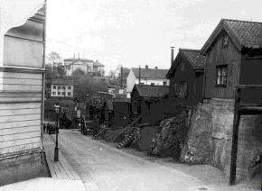
|
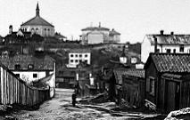 
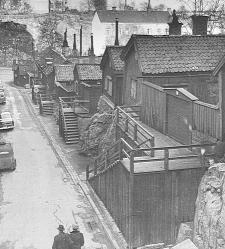  Samma motiv 1957
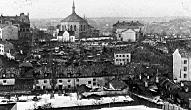  Från Åsögatan norrut mot Ersta. Baksidan av Folkungagatan 146 från söder. Till höger Sågargatan längs planket.
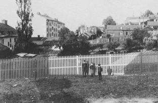  1910 österut. Staketet vetter mot Erstagatan. Bakom detta kvarteret Fyrtornet med, till vänster, Folkungagatan 42B (146). Bakom nästa staket Sågargatan 1-5, varav 1 längst till vänster. Från Sågargatan i bildens mitt utgår Lotsgatan. Hyreshusen till vänster i bakgrunden Folkungagatan 46-48A (150-152), som tillsammans med Sågargatan 1-3 och Lotsgatan 1-5 ingår i kvarteret Utkiken
1910 österut. Staketet vetter mot Erstagatan. Bakom detta kvarteret Fyrtornet med, till vänster, Folkungagatan 42B (146). Bakom nästa staket Sågargatan 1-5, varav 1 längst till vänster. Från Sågargatan i bildens mitt utgår Lotsgatan. Hyreshusen till vänster i bakgrunden Folkungagatan 46-48A (150-152), som tillsammans med Sågargatan 1-3 och Lotsgatan 1-5 ingår i kvarteret Utkiken
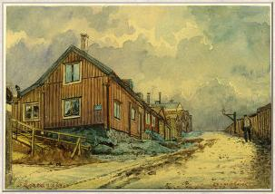 Sågargatan söderut från Lotsgatan. Akvarell, Olof Martin Andersson. 1900-1910
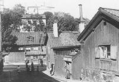  Sågargatan mot Folkungagatan.
Sågargatan mot Folkungagatan.Nr 1 till höger.
|
"Vår hufvudstad eger, i trots af det betydande omdaningsarbetet, som under de senaste årtiondena egt rum, ännu qvar en mängd platser, hvilka alltjämt befinna sig i samma anspråkslösa skick, som de troligen egt sedan århundraden tillbaka, och hvilka, omgifna som de äro af uppväxande nya storstadsdelar, förete en mycket pittoresk anblick. En af dessa, och en af de egendomligaste, är den, af hvilken vi här meddela en bild: Sågaregatan, eller som den ännu för något tiotal år sedan hette, Sågaregränden på Södermalm. " Ur Nya Dagl Allehanda, 1900. Huset uppfördes strax efter 1725, sedan en tidigare byggnad på tomten brunnit ned 1723. Det brandförsäkrades som tvåvåningshus 1778. Förvärvades av staden 1883. Senast ombyggt 1968.
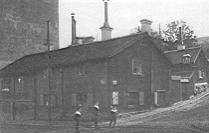 
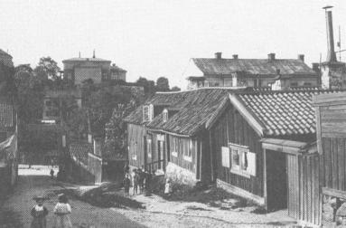  Sågargatan från Åsögatan mot Folkungagatan år 1906
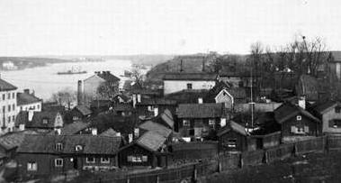  Kåkstaden mellan Åsögatan-Sågargatan-Folkungagatan. Från Erstagatan mot öster 1907
|